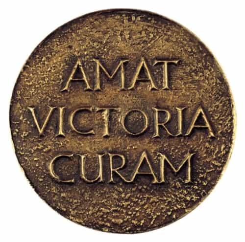

< < < Back
Has Game Made Me A Better Lawyer? – Return Of Kings
I’m currently in the middle of the most intense, tiring, yet intellectually stimulating stretch of my legal career. For anyone who is familiar with civil litigation, trial rarely—and I mean rarely—happens. Most cases settle before trial because there is just too much uncertainty, and the cost of going to trial is astronomical. This month I had not one, but three trials.
Modesty being my forte, I will unabashedly state that I am a pretty good lawyer. I’ve previously moved up the ranks of a law firm pretty quick and have had judges, clients, and co-workers compliment my abilities. But infrequently do you get to see all your skills come into play at the same time, which would be the aforementioned engagement of trial. As they happen so rarely (my last one was in 2009), I have a means to measure my growth subjectively.
We often talk about how game translates into other areas of your life. For example, a few months ago some light flirting (and I do mean light) got me a free upgrade to business class on a flight to Europe. My game journey began a few years ago and while it will never end, after a lot of effort I have grown considerably both as a man in general and specifically in my ability to interact with women. But aside from the general statement that fronts this paragraph, how does game specifically translate? Well, let’s compare and find out.
Preparation and Chance

You leave nothing to chance when trying to bed a woman. Before a date, or a night out, I go through an entire routine and make sure everything is accounted for and I am well-prepared. I am groomed from head to toe, shirt ironed, bed made, condoms ready, dog walked, bathroom clean. I make sure I have enough cash on me so I don’t have to use a credit card and await a tab if she is ready to go. I pay attention to logistics to make sure I am close to home base. Music, additional drinks of varied kinds are setup ahead of time. Essentially, when things start happening I try to leave as little to chance as possible and arm myself to be ready to handle anything.
In court, and especially at trial, you are at war. Every little detail matters, and the more prepared you are the better you will be. Have all your exhibits ready, numbered and organized. Know all your witnesses’ previous testimonies and be ready to impeach them if they change their stories. Laptop powered fully, notepad with multiple color pens that correlate to multiple thought chains you will have. Realize how much time you have before the next break because the opposing attorney will coach his witness if you are doing a cross-examination (conversely, you may want to coach your own witness during a break). Just like in game, you need to be fully prepared at all times.
Being Calm

When I first started approaching random girls, I was a nervous as can be. Move onto dates and the same nervousness would seep out of my skin. Eventually after many many approaches and dates, I no longer was nervous. I would be calm in all aspects of dealing with girls.
I’ve noticed that now when I go to court, I am as calm as it gets. I’m almost happy to engage in argument, to publicly speak to the judge and whoever else may be sitting in the courtroom. As I look at other witnesses and the other attorneys at trial, I can see they are still nervous. Fidgety hands, inability to contain their emotions, and so on. This ability to remain cool is very powerful and makes you come across as confident and knowledgeable.
Handling Curveballs

With any girl you are trying to bed, whether following a date or within a night out, you will be thrown curveballs. She will tell you she doesn’t drink when you go meet for drinks. You have invited her over for dinner and was planning on making chicken and she’s a vegetarian. You find a random girl at the bar and her friend grabs her on your way to the taxi ride that was going to lead you to banging her silly. It happens a lot, and to all of us, and you have to be almost military-like in your counterattack to deal with such occurrences. The more I dealt with them, the better I got.
The same thing happens at trial. I’m about to use a piece of evidence and the opposing attorney tries to exclude it. The Judge starts asking questions of my own witness and ruins my flow and comfort. My staff mislabeled a key exhibit. The number of times I’ve had curveballs thrown my way with game has made me both sharper to react and figure out a solution, and also remain calm in the process. You would be amazed how many attorneys simply crack when one small thing does not pan out the way they expected it to.
Observing Others
On a date, I am observing all her actions. Does she flip her hair, does she retract upon my touch, what words does she use when speaking and how does she react to my words and stories? Taking of a sum of all these observances I gauge how interested she is in both me and sex.
The same applies to night game. I observe and see if a girl is standing in a closed manner, who she is there with, if she is drinking wine, beer, or tequila. Is she alone while her friend is talking to a guy? All these observations will help me assess where to focus my efforts.
Again, the translation to the legal world is substantial. This is especially so with respect to witnesses and other attorneys. I listen carefully to their words. I watch their eyes to see if they dart around when they speak, indicating truthfulness (or more commonly lack thereof). I watch the judge to see if I am losing him to boredom, or if he is giving me clues as to what he thinks is important by the intensity of his stare. Know your surroundings and you will be much better off than your competition.
Conclusion
To answer the question posed in the title, unequivocally yes. And this is not surprising. Many men can handle themselves in all aspects of life but freeze up when dealing with women. So if you start to master this one aspect of life, which some view as insanely difficult, everything else will seem easy. Couple this with the similarities explained above between practicing law and engaging in game, and I can in all honesty say it has made me a better lawyer.
Read Next: 5 Reasons Being A Lawyer Sucks